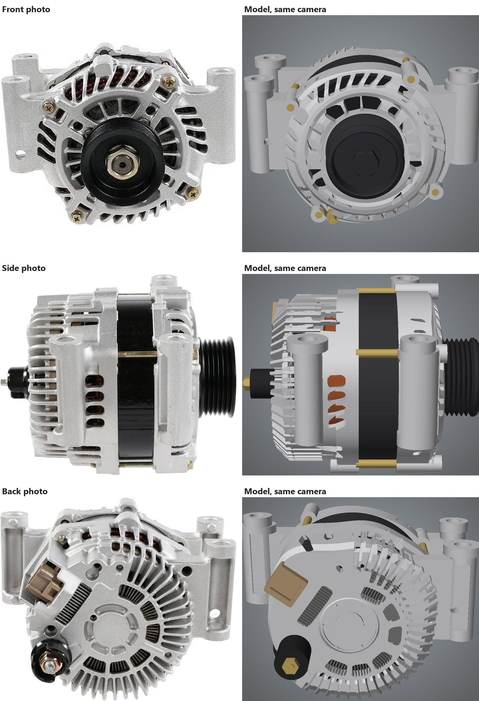

The measured model
The third attempt kept the recovered cameras and scale from chapter 2 and designed the part the way an engineer would: turned housings, a grooved pulley, round mounting pillars, 48 cooling fins, and vent windows traced from the photos and cut through the castings. Every change was scored against all three photos and kept only if the score improved.
Loading model…
Each photo next to the model

How it was built
- Recover the camerasVGGT worked out where each photo was taken from and produced a rough point cloud, as in chapter 2.
- Find the scale without measuringThe 6-rib pulley's grooves are 3.56 mm apart; in the side photo that spacing is 18 pixels.
- Design it as real CADEach part is a proper solid with its own dimensions, combined with solid modelling, the same way a CAD package builds a part.
- Score every change against the photosEach change is drawn from all three cameras and compared on outline, edges and surface depth. It stays only if the whole model scores better.
Getting from first draft to this
The first hand-built versions (v1 to v4) used cameras solved from points clicked by hand in each photo. They had the right parts in roughly the right places, but they were judged mostly on outline, and outline hides a lot. At v5 the model moved onto the VGGT cameras. Then a closer look at the photos found three things the drafts had wrong: the mounting pillars were square instead of round, the B+ battery terminal on the back was the wrong shape, and the front face was a flat plate where the side photo shows it stepped. Each fix was measured, and one was a correction of an earlier "fix": shortening the terminal scored worse, because its length had been right and its shape wrong.
| Version | What changed | Outline match | Edges matched | Depth error |
|---|---|---|---|---|
| v5 | Hand-built CAD moved onto VGGT cameras | 94.5 % | 52 % | 4.90 mm |
| v6 | Scorer in charge: depth and edges, not just outline | 94.4 % | 53 % | 3.17 mm |
| v8 | Round pillars, full-length fins, refitted B+ terminal | 95.1 % | 55 % | 2.79 mm |
| v10 | Stepped front face, vent windows, fitted pulley | 96.1 % | 61 % | 2.43 mm |
Averages over the three photos. The outline barely moved after v5; the depth error halved and the share of real edges reproduced kept climbing. Changes that scored worse, such as full-width front plates or deeper fins, were thrown out.
How close it is, photo by photo
| Photo | Outline match | Edges matched | Edge precision | Depth error |
|---|---|---|---|---|
| Front | 96.8 % | 73.7 % | 79.7 % | 2.15 mm |
| Side | 95.6 % | 56.4 % | 59.5 % | 2.67 mm |
| Back | 96.1 % | 53.7 % | 63.4 % | 2.46 mm |
The gaps that remain are mostly fine casting detail: small ribs, bosses and what's inside the vents.
From angles no photo shows

Design like an engineer, check like an inspector.
Neither guessing nor generic shapes got there. Real construction plus a measured check of every change against every photo did. The next step is to teach the automatic pipeline from chapter 2 to design this way for any part.
What to keep in mind
Measured where it was seen
Everything visible in at least one photo is measured from it. The top, the bottom and the unphotographed side are reasonable fill-ins.
Materials are generic
Cast aluminium, black-coated steel, brass, copper and plastic are standard material settings, not colours taken from the photos.
Designed by hand, this time
This model was designed with the measuring tools rather than generated automatically. Making that automatic is the open problem.
Scorecard
All three models, scored by the same program against the same three photos. Each figure is the average of the front, side and back photo.
| Model | Outline match | Edges matched | Edge precision | Depth error | Triangles |
|---|---|---|---|---|---|
| 1 · Melted | 94.2 % | 58 % | 60 % | 3.45 mm | 140,000 |
| 2 · Simple shapes | 93.9 % | 16 % | 52 % | 2.49 mm | 5,180 |
| 3 · Measured | 96.2 % | 61 % | 68 % | 2.43 mm | 61,888 |
- Outline match: how much of the part's outline in each photo the model covers, and nothing more.
- Edges matched: the share of edges visible in the photos that the model reproduces within 3 pixels. Edge precision is the reverse: the share of the model's edges that are really in the photos.
- Depth error: average distance from the model's surface to a 3-D point cloud recovered from the photos, on surfaces the photos actually show.
- The simple-shapes model is scored with the cameras its own pipeline recovered; the other two use the measured model's cameras. The melted model was given its best possible placement first, so the comparison is fair to it.